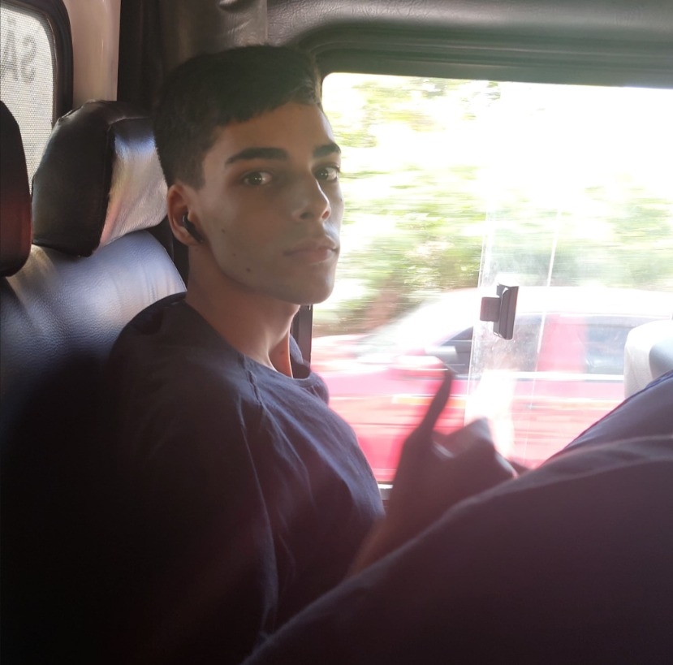
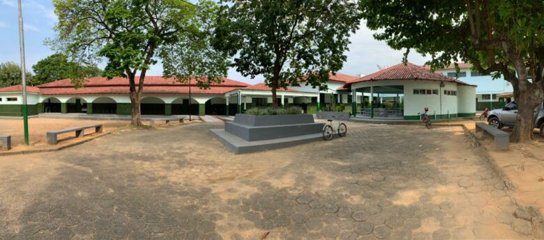

Minha História

Meu nome é Filipe, nasci em Vila Velha, onde iniciei minha trajetória
de vida. Em 2013, me mudei para Alfredo Chaves, cidade onde vivi por
alguns anos e tive a oportunidade de conhecer uma realidade diferente,
o que contribuiu bastante para o meu desenvolvimento pessoal e
amadurecimento. Em 2017, retornei para Vila Velha, onde continuei
minha jornada, já com novas experiências e aprendizados adquiridos ao
longo do tempo.
Essas mudanças de cidade foram importantes para a construção da
minha identidade, ajudando a desenvolver minha adaptação a novos
ambientes, convivência social e visão de mundo.
Minha trajetória acadêmica foi construída principalmente em Vila
Velha, onde iniciei e concluí o ensino médio na mesma instituição de
ensino. Durante esse período, desenvolvi uma base sólida de
conhecimentos e comecei a me interessar mais pela área de
tecnologia.
Buscando me aprofundar nesse interesse, ingressei no curso
técnico em Informática pelo Instituto Estadual de Educação Técnica
Vasco Coutinho, onde estudei até o último período. Nesse curso,
adquiri conhecimentos importantes relacionados à informática, lógica
de programação e desenvolvimento, o que fortaleceu ainda mais minha
afinidade com a área.
Atualmente, estou cursando Ciência da
Computação na Universidade Vila Velha (UVV), com o objetivo de
expandir meus conhecimentos técnicos e teóricos. Tenho grande
interesse em seguir carreira na área de tecnologia, especialmente em
Cyber Segurança, um campo que vem crescendo cada vez mais e exige
profissionais qualificados para proteção de dados e sistemas.
História Academica

Minhas Habilidades
|
Meus Hobbys
|
Atuais Disciplinas
|
Objetivo / Meta
Meu objetivo é crescer na área de tecnologia, buscando sempre aprender mais e ganhar experiência. Pretendo atuar na área de Cyber Segurança, trabalhando com proteção de dados e sistemas.